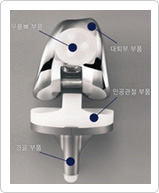

Artificial joint surgery is given to people whose joint can not be cured by treatment using medication nor by physical therapy which is true of various diseases and injuries. When patientsare not eligible to receiveother types of surgery, they can opt for artificial joint surgery, which insertsan artificial joint made of safe ceramic and plastic into their knees, helps to reduce knee pain and lets patients enjoy freedom of knee joint movement, stability and fixation. As a result, patients can live normally after the surgery.before artificialknee joint surgery
after artificial knee joint surgery